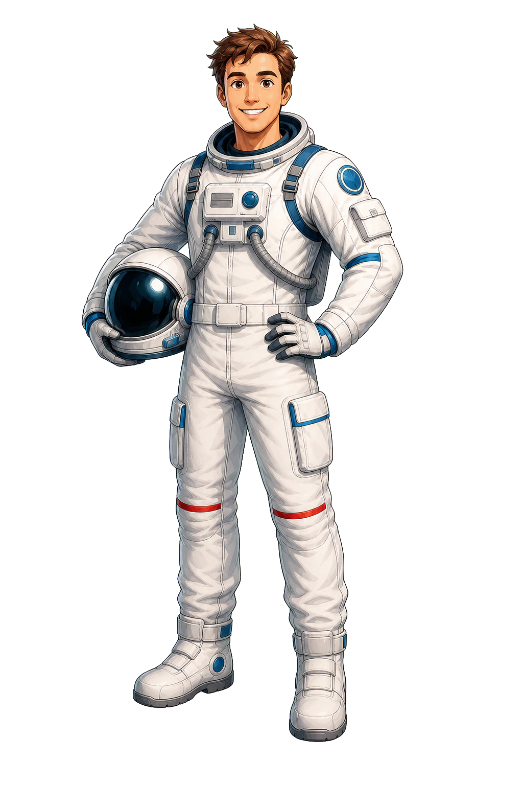
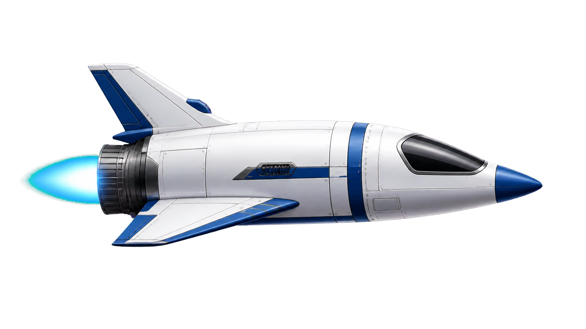

Tiempo propio
Δτ = Δt/γ
El viajero mide menos tiempo durante los tramos de velocidad constante.
Relatividad especial · tiempo propio
Un gemelo se queda en la Tierra y el otro viaja a una estrella lejana y vuelve. La aceleración de giro rompe la simetría: el viajero acumula menos tiempo propio.


El viajero mide menos tiempo durante los tramos de velocidad constante.
Si D está en años luz y v en unidades de c, el tiempo terrestre sale en años.
El gemelo viajero cambia de marco al dar la vuelta. Por eso no hay contradicción entre ambos relojes.